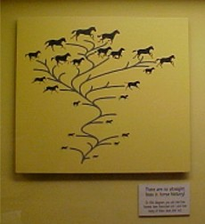

Horses and Peppered Moths
In this final installment about the evolutionary errors still displayed in natural history museums today, we finally get around to addressing horses and peppered moths.
Horses

|
Two months ago we reported that the Chicago Field Museum of Natural History admitted that they "once told the horse story wrong." Ever since the respected American paleontologist, Dr. Othniel C. Marsh of Yale, published his paper on horse evolution in 1874, most natural history museums have told the same wrong story. They typically display a series of skeletons of animals, starting with a five-toed badger-like animal ending with a large single-toed horse. The animals in between are alleged to be transitional forms showing how the five toes gradually merged into one as the animal grew larger. This series was completely refuted by another respected paleontologist, George Gaylord Simpson, in 1951. Despite this, fifty years later, some uninformed evolutionists still cite the horse as an example of evolution recorded in the fossil record.
|
If you ran a natural history museum, what would you do? Well, you could quietly withdraw the exhibit. That would prevent the error from being propagated. A better thing to do would be to admit to the mistake, and tell all the visitors that the commonly held belief about horse evolution is wrong. We applaud the Field Museum for doing exactly that.
But, despite having taken the first step by admitting the mistake, they made a feeble attempt at "damage control." They repeated the evolutionary mantra that horse evolution isn't as simple and linear as once believed, but there is still good evidence that the horse evolved. Of course, there isn't really any evidence, which is why they don't display it.
The Field Museum has a cute little horse race game we described two months ago. This entertaining mechanical device shows horses disappearing and appearing in the middle of the race. Of course nobody really believes that a horse has ever popped up out of the ground with a jockey on his back. The display is merely intended to convey the idea that horses evolved suddenly, and mysteriously went extinct in the fossil record at various times. It is presented as fact, without any supporting evidence.
|
There is a chart at the Field Museum that supposedly shows horse evolution, but if you look closely at it you will see that it is "data-free."
Not a single animal is labeled. All the horses appear as leaves on the tree. Not a single creature is shown to be a branch point. There is a good reason for that. They don't have any evidence that any species has ever evolved into any other species. They just have fossils of many unrelated creatures, which they have artistically joined with a drawing of a bent tree.
|

|
A Horse is a Horse, Of Course, Of Course
You might ask, "How do they know all of the creatures represented on the tree were really horses? How do they know they weren't cows, goats, or deer?" The flippant answer is that they must be horses because they all have one single toe, which distinguishes them from cows and goats and other animals that have cloven hooves.
But the animals in the alleged horse evolutionary tree don't all have one toe. Some of them have cloven hooves. They have to, to show how the horse's hoof evolved from multiple toes to a single toe. So, how do they know that an animal with cloven hooves is really a horse, or a horse ancestor? They don't, of course.
For that matter, how do they know that an extinct animal with just one toe is a horse? They don't. The common test for determining if two critters are the same species is to mate them and see if they produce fertile offspring. They can't do that with bones. So, there is no objective test. There is only subjective judgment. If an animal looks enough like a horse that it might be a horse, but different enough that it clearly isn't a horse, then someone declares that it is a horse ancestor. You have to take it by faith that the expert is right.
Fossil creatures are classified on the basis of appearance, and that appearance is inferred from the bones. This method is clearly far from foolproof. Appearance can be misleading. If you had nothing other than the bones of a zebra to work from, you might conclude that a zebra is a horse, but it isn't. On the other hand, some true horses, such as the little Icelandic horses and large Clydesdale horses, look sufficiently different from wild horses that one might think they are not horses if one only had bones to work with.
There is a great variety in horses today. That fact is readily apparent in the Tournament of Roses Parade every year. Next year, try to watch the KTLA coverage with Bob Eubanks and Stephanie Edwards because they don't cut to a commercial every time an equestrian unit comes around the corner. Apparently the two things Bob Eubanks likes best are (1) horses, and (2) talking about horses (not necessarily in that order). By the end of the parade you will have seen overwhelming evidence that man has bred so many wonderfully different varieties of horses. There is no argument about that! But you won't see an equestrian unit consisting of riders mounted on creatures that evolved from horses. That's because artificial selection produces new varieties, but it doesn't produce new species. Varieties are not, as Darwin believed, "incipient species."
All modern horses have undivided hooves. If it is true, as evolutionists like to say, that "the present is the key to the past", one would have to assume that all extinct horses also had undivided hooves. But, in order to show how the single toe evolved, one has to display "horses" from the past that had two, three, four, or five toes. Therefore, creatures with multiple toes are arbitrarily classified as primitive horses just so they can be called modern horse ancestors.
We have no doubt that if there were any evidence for horse evolution, the Field Museum would show it. The fact that they just show an unlabeled drawing of a tree and horse-like silhouettes is silent admission that there is no evidence. Although we would prefer that the Field Museum would come right out and say so, we will settle for their display of lack of evidence.
Our biggest complaint with the Field Museum has to do with the Peppered Moth display. We wish they would replace it with a "We once told the Peppered Moth story wrong" display.
It has been incorrectly taught in nearly every biology textbook for many years that the peppered moth shows how evolution helps creatures adapt to the environment. It has been claimed that before the Industrial Revolution, most peppered moths were light because they were well camouflaged when resting on tree trunks. The dark moths were rare. When the Industrial Revolution made the tree trunks sooty, the dark moths became more abundant. Since stricter pollution controls have cleaned up the environment, the light moths are more abundant again. At least, that's the story.

|
The museum has light and dark moths mounted on a clear plastic dial that allows visitors to see how the moths look against light and dark backgrounds. This is a "hands-on" version of the pictures in the biology textbooks showing how well the camouflage works.
|
The Pictures Were Faked
The pictures in the textbooks are now known to be fakes. They are pictures of dead moths glued to a tree. Personally, I do not have a problem with staged pictures of dead moths. I have tried to take pictures of butterflies on flowers and have discovered that one has to be really patient, or really lucky, to get a good butterfly picture. Butterflies just don't sit still long enough for me to focus the camera, set the exposure, and frame the picture properly. To find a light moth and a dark moth right next to each other on a tree branch, and to have them stay there long enough to get a good shot, is virtually impossible. The picture had to be staged.
There would not be anything unethical about using dead specimens for the picture, except for one thing. The reason they could not get a good picture of live moths on tree trunks had nothing to do with lighting, or the tendency of moths not to stay put very long. They could not get a good picture of live peppered moths on tree trunks because peppered moths don't normally land on tree trunks. They rest on the undersides of leaves. That's why there was a scandal about the photographs. The pictures weren't recreations of situations that really occur in nature. They were fraudulent representations of something that rarely, if ever, happens.
That is important because the theory rests entirely on the idea that how well the moths are camouflaged on tree trunks affects their survival. Since the moths never land on tree trunks, the camouflage issue is irrelevant.
The Methodology and Conclusion Were Flawed
Having been raised by parents who were members of the Audubon Society, as a child I spent far too many cold and miserable Nebraska December days participating in Christmas bird counts. Therefore, I naturally assumed that the biology textbook statements about the numbers of peppered moths were obtained from equally miserable annual counts of peppered moths before, during, and after the Industrial Revolution.
In fact, the study was based on a release-and-catch experiment. So, they didn't measure what the actual ratio of light and dark moths really was. Furthermore, because they didn't catch every single moth they released, they were affecting the number of moths of various colors in subsequent years.
The study concluded that the environment caused the peppered moths to "adapt." "Adapt" is a code word that evolutionists use as a synonym for "evolve" to avoid controversy.
Remember that Darwin believed that exercise, nutrition, and the environment caused creatures to acquire new inheritable characteristics. He thought that if cows were milked daily, their udders would develop more fully from the exercise, and therefore the calves would be born with larger udders. He believed that if one planted cabbage in poor soil, the cabbage would somehow adapt to the poor soil and produce seeds which would grow into cabbages that do better in poor soil. He believed that by planting cabbages in increasingly poorer soil, one could produce an entirely new species of cabbage that would grow in very poor soil. Darwin was wrong. Poor soil doesn't cause cabbage to acquire the ability to grow in poor soil, and even if it did, acquired characteristics aren't inherited. Milking a cow doesn't change her DNA so that her calves give more milk.
The Field Museum exhibit misleads the casual visitor into believing that the darker colored tree trunks somehow encouraged the moths to acquire slightly darker coloring, and that this darker coloring was inherited by the offspring. Industrial pollution supposedly was the mechanism that caused the moth to adapt (evolve) to survive better in a polluted world. Not very many evolutionists believe this any more because it isn't consistent with what science has discovered about genetics.
The Truth
The Field Museum should tell its visitors that both dark and light varieties of peppered moths existed in Britain before, during, and after the Industrial Revolution. Therefore, the Industrial Revolution did not cause any new varieties to evolve. Both varieties were present to begin with. Even if a new variety had evolved, that would have had nothing to do with the evolution of a new species. If the black peppered moths had evolved into dragon flies that ate soot, then there would have been some evidence of evolution. But that isn't what happened. Light and dark peppered moths "evolved" into light and dark peppered moths. In other words, nothing happened.
The presumed change in the ratio of light to dark moths was not actually measured. It was inferred from a dubious release-and-catch method that potentially affected the number of moths in subsequent years. Therefore, we don't even know if the ratio of light to dark moths really did change naturally during the period of study.
The proposed explanation for the alleged change in the ratio of light to dark moths was based on the effectiveness of the moth's camouflage when the moth landed on a tree trunk. But since moths don't land on tree trunks, the hypothetical effectiveness of the camouflage is irrelevant. If there was any change in the ratio of light to dark moths, it didn't have anything to do with camouflage.
Even if the ratio of light to dark moths did change, it would not be evidence of Darwinian adaptation. It would not have shown that environmental factors cause acquired characteristics to be inherited. It merely would have shown that if you start off with a population consisting of two colors, and kill off most of one color, you end up with a population that is predominantly the other color.
The Field Museum could do a valuable service by exposing a previously held scientific belief that is now known to be false. Unfortunately, they choose to perpetuate it.
Adaptation
Since we touched on the issue of adaptation, we should address it a little bit more fully before we end this essay.
It is sometimes possible to breed varieties that have desired characteristics. For example, suppose you want to grow wheat that has large kernels and grows in a hot, dry climate. It may be possible to develop such a variety. You theoretically, at least, could find a variety of wheat that can stand the climate, but produces very small heads of grain. You might also find a variety of wheat that produces lots of large grain, but doesn't do well in hot weather. By cross-pollinating these two varieties of wheat you will get offspring that have half the genes from the first kind of wheat, and half the genes from the other kind.
You will get lots of different combinations. If you are lucky, you might get a combination that produces a good crop in hot weather. You could cultivate that hybrid.
One might say that a new variety of wheat has evolved, and we would not argue with that. Microevolution does occur. New varieties can arise. It could even happen naturally, by accident.
The important point in this example is that we started off with wheat, and ended up with wheat. Macroevolution did not happen. The genetic information for surviving in hot weather, and for producing lots of grain, already existed in the wild wheat. All we did was discard the genes we didn't want and kept the ones we wanted.
The question that the theory of evolution is supposed to answer, but utterly fails to answer, is "Where did the wheat genes come from in the first place?" Once you have genes, you can manipulate them all you want. The problem is getting the genes in the first place.
Darwin thought that genes were acquired by exercise or exposure to the environment. Darwin was wrong. Adaptations are not acquired and inherited. The genetic information is there to begin with.
If a creature already has the genetic potential to survive in its environment, it survives. If it doesn't have the genetic information to survive in that environment, it migrates to an environment where it can survive, or it dies. Often, it is the latter. That's why there are so many extinct species.
The idea that diet, exercise, or the environment, can somehow change the DNA in the reproductive cells so that the offspring are better adapted to the environment is without scientific support. But this is, effectively, what evolutionists are saying when they claim that creatures adapt to their environment.